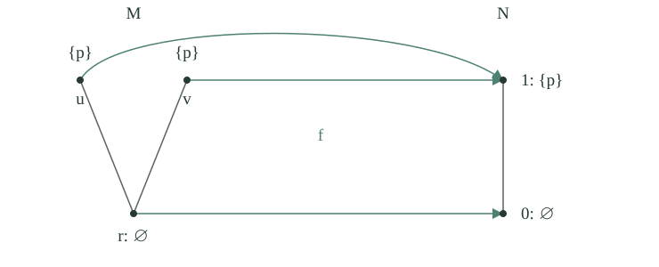
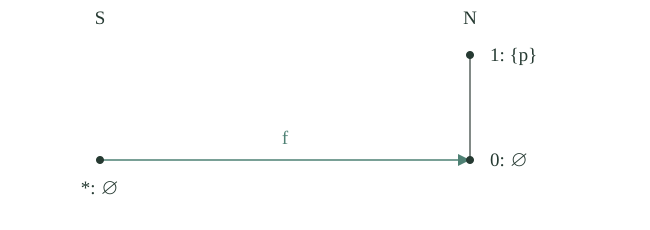

Let \((W,\leq)\) and \((X,\preceq)\) be nonempty preordered Kripke frames. A bounded frame map is a specified function \(f:W\to X\) with the following two properties:
Forth says that a possible extension remains possible after applying the map. Back says that every future of the image is represented by a future of the original world. The witness \(v\) may depend on \(w\) and \(x\). It need not be unique. Neither condition requires \(f\) to be injective or surjective on the whole frame.
Write \(\mathord\uparrow w=\{v:w\leq v\}\). A function \(f:W\to X\) is a bounded frame map if and only if, for every \(w\in W\),
For a bounded frame map, forth gives the inclusion from left to right. If \(x\succeq f(w)\), back supplies \(v\geq w\) with \(f(v)=x\), giving the reverse inclusion. Conversely, the displayed equality sends every \(v\geq w\) to an element above \(f(w)\), which is forth. It also represents each \(x\succeq f(w)\) as the image of such a \(v\), which is back.
Let \(M=(W,\leq,V)\) and \(N=(X,\preceq,U)\) have the same atom set \(P\). A bounded morphism, also called a p-morphism, from \(M\) to \(N\) is a bounded frame map \(f:W\to X\) satisfying, for every \(w\in W\) and \(p\in P\),
The atom condition is an equivalence at every world, not just at a chosen root. Its function is the same \(f\) as in forth and back. In particular, atom truth can neither be gained nor lost when a world is mapped.
The identity of a model is a bounded morphism. If \(f:M\to N\) and \(g:N\to L\) are bounded morphisms, their actual composite \(g\circ f\) is a bounded morphism from \(M\) to \(L\).
For the identity, atom agreement and forth are immediate. A future \(v\geq w\) lifts to that very \(v\), proving back. For the composite, chain the two atom equivalences and the two forth conditions. To prove back, suppose \(g(f(w))\leq_L y\). Back for \(g\) gives \(x\succeq f(w)\) with \(g(x)=y\). Back for \(f\) then gives \(v\geq w\) with \(f(v)=x\). Thus \(g(f(v))=y\), as required. The construction lifts the same requested world \(y\), through the specified two maps.
Let \(f:W\to X\) be a bounded frame map and let \(N=(X,\preceq,U)\) be a model. Its pullback model along \(f\), denoted \(f^*N\), has the original frame \((W,\leq)\) and valuation
This valuation is persistent. If \(w\leq v\), forth gives \(f(w)\preceq f(v)\), so persistence in \(N\) carries \(U(f(w))\) into \(U(f(v))\). Hence \(f^*N\) is a model, and the very function \(f\) is a bounded morphism \(f^*N\to N\): atoms agree by definition, while forth and back are the supplied frame conditions.
For a world \(r\) of \(M\), the inclusion of the generated submodel \(M_{\geq r}\) into \(M\), given by \(i(v)=v\), is a bounded morphism.
The valuation and preorder are restrictions, so atom agreement and forth hold. For back, take \(v\geq r\) and an original future \(x\geq v\). Transitivity gives \(x\geq r\), so \(x\) is still a world of the generated submodel. That same world lifts the requested future. The inclusion is surjective precisely when every original world lies above \(r\); no such global assumption was needed for back.
If \(f:M\to N\) is a bounded morphism, then for every formula \(A\) in the shared native propositional syntax and every world \(w\) of \(M\),
Induct on \(A\), keeping the world arbitrary. Atoms are the atom condition. Neither model forces falsum. For conjunction, apply the two induction equivalences to the two forced conjuncts. For disjunction, apply the relevant equivalence to the chosen forced disjunct. These clauses concern only the current world.
Suppose \(A=B\to C\). First assume \(N,f(w)\Vdash B\to C\). Take \(v\geq w\) with \(M,v\Vdash B\). Forth gives \(f(v)\succeq f(w)\), and induction gives \(N,f(v)\Vdash B\). The target implication yields \(N,f(v)\Vdash C\), which induction carries back to \(M,v\Vdash C\). This proves the source implication.
Conversely assume \(M,w\Vdash B\to C\). Take \(x\succeq f(w)\) with \(N,x\Vdash B\). Back supplies \(v\geq w\) with \(f(v)=x\). By induction \(M,v\Vdash B\), so the source implication gives \(M,v\Vdash C\). Induction and \(f(v)=x\) yield \(N,x\Vdash C\). This proves the target implication, at every requested target future.
For native negation, assume first \(N,f(w)\Vdash\neg B\). Every \(v\geq w\) maps by forth to a future of \(f(w)\). That target world fails to force \(B\), so induction makes \(M,v\) fail to force \(B\). Thus \(M,w\Vdash\neg B\). In the other direction, lift any \(x\succeq f(w)\) by back. If it forced \(B\), induction would make its lift force \(B\), contradicting the source negation. Hence the target forces \(\neg B\). This covers every constructor.
Let \(f:M\to N\) be a bounded morphism, \(w\in W\), \(\Gamma\) any set of formulas, and \(A\) a formula. Then
Apply separately to each member of \(\Gamma\), and negate its equivalence for \(A\). Both the retained premises and the failed conclusion therefore concern exactly the mapped world \(f(w)\). The premise set need not be finite, and surjectivity is unnecessary for this pointed assertion.
For a supplied finite partially ordered model, the last-world map from its strict-path tree gives such a transport at every path. At the one-point root path it retains exactly the original designated counterexample, while separating different histories into a finite rooted tree.
For any bounded morphism \(f:M\to N\), if \(N,x\Vdash A\) at every target world, then \(M,w\Vdash A\) at every source world. If \(f\) is surjective, the converse also holds.
The first direction applies target truth at \(f(w)\), then . For the converse, choose for any target world \(x\) a source world \(w\) with \(f(w)=x\). Source truth and the same equivalence give truth at \(x\). Back alone supplies preimages only for futures of already mapped worlds. It need not reach an unrelated target region.
Fix the atom set \(P\). A formula \(A\) is valid on a frame \((W,\leq)\) if \(M,w\Vdash A\) for every persistent valuation \(V\) on that frame and every \(w\in W\). Write \((W,\leq)\Vdash A\) for this condition.
This quantifies over valuations as well as worlds. Truth everywhere in one fixed model is weaker. It is also different from Kripke validity without a specified frame, which quantifies over all nonempty preordered frames too.
For numbered-atom formulas, validity of weak excluded middle has an exact frame condition: every pair of futures of one world must have a common continuation. Even validity of its single atom instance, quantified over every persistent valuation, characterizes that condition.
Suppose \(f:W\to X\) is a surjective bounded frame map. For every formula \(A\), if \((W,\leq)\Vdash A\), then \((X,\preceq)\Vdash A\).
Take any target valuation and form its specified pullback model \(f^*N\). By source frame validity, every world of this pullback forces \(A\). The actual map \(f:f^*N\to N\) is a surjective bounded morphism. The converse direction in therefore makes every world of \(N\) force \(A\). Since the target valuation was arbitrary, \(A\) is valid on its frame.
Fix an atom \(p\). Let \(M\) have a root \(r\) and two incomparable terminal worlds \(u,v\), with \(V(r)=\varnothing\) and \(V(u)=V(v)=\{p\}\). Let \(N\) be the two-world chain \(0\prec1\), with \(U(0)=\varnothing\) and \(U(1)=\{p\}\). Then the surjective function
is a bounded morphism, although it is not injective.

Atom agreement follows at each of the three worlds. Every strict source comparison starts at \(r\) and ends at a leaf, so its image is \(0\preceq1\), proving forth. For back at \(r\), lift the future \(0\) by \(r\) and the future \(1\) by \(u\). At either leaf, the only future of its image \(1\) is \(1\) itself, lifted by that same leaf. Thus all three conditions hold. Since \(u\ne v\) have the same image, preserving every formula at mapped points does not require distinguishing every world.
Let \(S\) be a singleton model with no atoms forced. Map its sole world \(*\) to the lower world \(0\) of the chain \(N\) from . This map is monotone and atoms agree at every source world. Does it preserve and reflect all formulas?

No. The singleton forces \(\neg p\), because its only future is itself and it fails to force \(p\). The target lower world does not force \(\neg p\), since its upper future forces \(p\). The same example separates the implication \(p\to\bot\).
In the reverse direction, \(N,0\Vdash\neg\neg p\), because neither chain world forces \(\neg p\). The singleton does not force \(\neg\neg p\), because it already forces \(\neg p\). Thus the claimed equivalence fails in both directions for suitable formulas. Precisely the missing back condition would have required a source future mapping to \(1\), and there is none.
The surjective bounded frame map in sends the fork onto the chain. Must every formula valid on the chain also be valid on the fork?
No. Consider \(\neg p\lor\neg\neg p\). It is valid on the two-world chain. For any persistent valuation, either the upper world forces \(p\), in which case both worlds force \(\neg\neg p\), or it does not. In the latter case persistence prevents \(p\) at the lower world too, so both worlds force \(\neg p\). In either case the displayed disjunction holds at every chain world.
On the fork, choose a different valuation: \(p\) holds at \(u\), but not at \(r\) or \(v\). The root does not force \(\neg p\), because \(u\) forces \(p\). The terminal world \(v\) forces \(\neg p\), so the root does not force \(\neg\neg p\) either. Therefore the disjunction fails at \(r\).
This valuation on the fork is not the pullback of any valuation on the chain: a pullback must give \(u\) and \(v\) the same atom information, since their images coincide. The two directions of concern one fixed pair of matching models. They do not identify all valuations on the two frames.